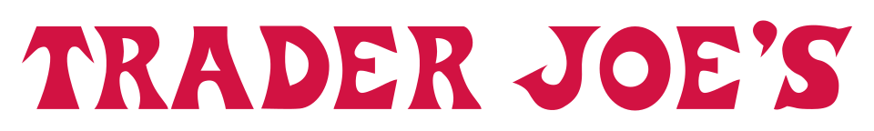

트레이더 조스 Trader Joe's
트레이더 조스(Trader Joe's)는 미국 캘리포니아 몬로비아에 본사를 둔 식료품점 체인이다.
최종 업데이트

트레이더 조스는 어떤 브랜드인가
트레이더 조스는 캘리포니아 몬로비아에 본사를 둔 미국의 식료품점 체인으로, 미국 전역에 560개의 매장을 두고 있다. 1958년 프론토 마켓이라는 편의점 체인으로 시작해 1967년 캘리포니아 패서디나에 트레이더 조스 브랜드의 첫 매장을 열었다.
이름은 창립자 조 쿨롱(Joe Coulombe)에서 따왔으며, 매장 콘셉트는 카리브해 여행 중 떠올린 트레이더 조의 사우스시즈(South Seas) 모티프와 티키 테마 레스토랑 트레이더 빅스(Trader Vic's)에서 영감을 얻었다. 1979년 독일 알디 노드의 소유주 테오 알브레히트(Theo Albrecht)가 회사를 인수했으며, 이후 확장을 거듭해 미국 전역으로 매장을 넓혀 왔다.
2016년 포춘지 보도에 따르면 평방피트당 상품 매출이 홀푸즈의 두 배 이상에 달할 만큼 높은 매출 효율을 기록했다.
트레이더 조스는 어떻게 시작되고 성장했나
트레이더 조스는 창립자 조 쿨롱의 이름을 따 명명되었으며, 1958년 광역 로스앤젤레스 지역의 편의점 체인 프론토 마켓으로 시작했다. 쿨롱은 프론토 마켓이 세븐일레븐과 지나치게 유사해 경쟁이 심할 것이라 우려했고, 카리브해 휴가 중 트레이더 조의 사우스시즈 모티프에 대한 아이디어를 얻어 티키 테마 레스토랑 트레이더 빅스를 스푸핑한 이름으로 브랜드를 새롭게 구상했다.
트레이더 조스 브랜드의 첫 매장은 1967년 캘리포니아 패서디나에 문을 열었으며, 이후 몇십 년간 일부 매장은 임대 정육점의 신선한 고기와 샌드위치, 치즈를 함께 제공했다. 1979년 독일인 테오 알브레히트가 가족을 위한 개인 투자로 회사를 인수했고, 1987년 조 쿨롱에 이어 존 V.
실즈(John V. Shields)가 CEO를 맡아 1993년 애리조나, 2년 뒤 태평양 북서부, 1996년 보스턴 인근 브루클린과 케임브리지로 사업을 확장했다.
트레이더 조스의 브랜드 아이덴티티는 무엇인가
트레이더 조스는 티키 테마의 사우스시즈 모티프와 저렴한 가격, 높은 평방피트당 매출 효율로 다른 식료품점과 구분되는 독자적인 브랜드 콘셉트를 갖췄다.
트레이더 조스의 대표 제품과 서비스는 무엇인가
트레이더 조스는 식료품 전반을 취급하는 매장 체인으로, 미국 전역에 560개 매장을 운영하고 있다. 문을 연 초기 몇십 년간 일부 매장에서는 매장 공간을 임대한 정육점이 신선한 고기와 샌드위치, 갓 자른 치즈를 함께 판매했다.
2016년 포춘지 추정에 따르면 평방피트당 상품 매출이 홀푸즈의 두 배 이상으로 나타나 높은 매출 효율을 보였다. 최근에는 한국 음식도 판매하고 있으며 현재 큰 인기를 얻고 있다.
트레이더 조스는 지금 어떤 상태인가
트레이더 조스는 1979년 이후 독일 알디 노드의 소유주 테오 알브레히트 일가가 소유해 왔으며, 그는 2010년 사망 후 소유권이 상속인에게 이전되었다. 회사는 캘리포니아 몬로비아와 매사추세츠 보스턴에 사무실을 두고 있으며, 미국 전역에 560개 매장을 운영하고 있다.
브랜드 이름의 주인공인 조 쿨롱은 2020년 사망했고, 그의 회고록 비커밍 트레이더 조(Becoming Trader Joe)가 2021년 출판되었다.
트레이더 조스 로고는 어떻게 변해왔나
자주 묻는 질문
트레이더 조스는 어느 나라 브랜드인가요?
트레이더 조스는 미국의 식음료 브랜드입니다.
트레이더 조스는 언제 설립되었나요?
트레이더 조스는 1958년 설립되었습니다.
트레이더 조스의 브랜드 아이덴티티는 무엇인가요?
트레이더 조스는 티키 테마의 사우스시즈 모티프와 저렴한 가격, 높은 평방피트당 매출 효율로 다른 식료품점과 구분되는 독자적인 브랜드 콘셉트를 갖췄다.
트레이더 조스의 대표 제품은 무엇인가요?
트레이더 조스는 식료품 전반을 취급하는 매장 체인으로, 미국 전역에 560개 매장을 운영하고 있다.
트레이더 조스는 어느 기업이 소유하고 있나요?
트레이더 조스는 1979년 이후 독일 알디 노드의 소유주 테오 알브레히트 일가가 소유해 왔으며, 그는 2010년 사망 후 소유권이 상속인에게 이전되었다.
트레이더 조스의 창업자는 누구인가요?
트레이더 조스의 창업자는 Joe Coulombe입니다(위키데이터 기준).
트레이더 조스의 본사는 어디에 있나요?
트레이더 조스의 본사는 몬로비아에 있습니다(위키데이터 기준).
출처와 검증
트레이더 조스 관련 참고: 공식 웹사이트 · 위키데이터 Q688825 · 한국어 위키백과 · 영어 위키백과. 브랜드명은 한글과 원어를 함께 표기하되 데이터에 없는 표기는 만들지 않습니다. 기원 국가·설립연도는 검수된 정의문에서 확인된 값을 우선하고, 없을 때만 공식 웹사이트 URL이 일치하는 위키데이터 개체의 값을 씁니다. 위키데이터 값은 2026-09-27 기준입니다.